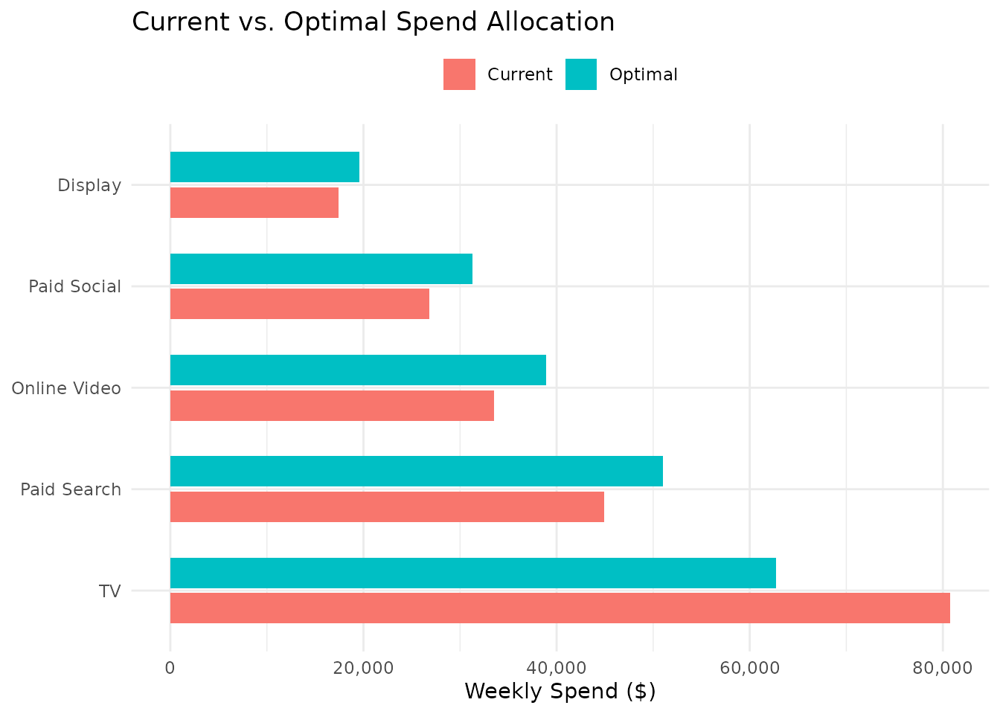
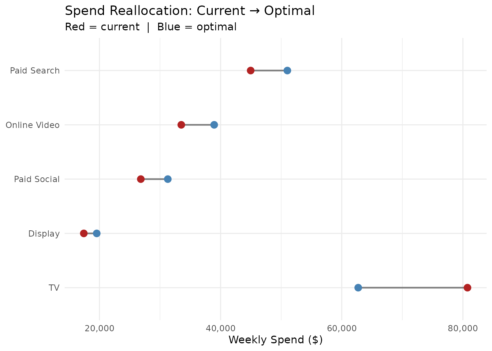
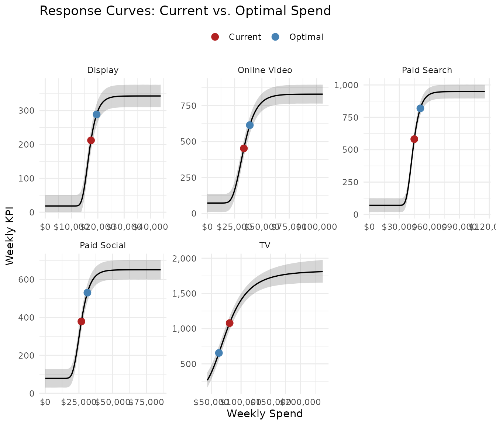
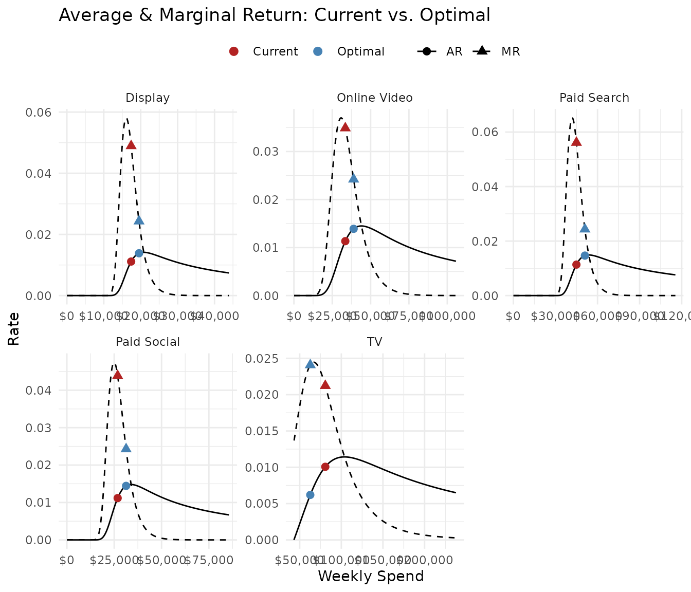
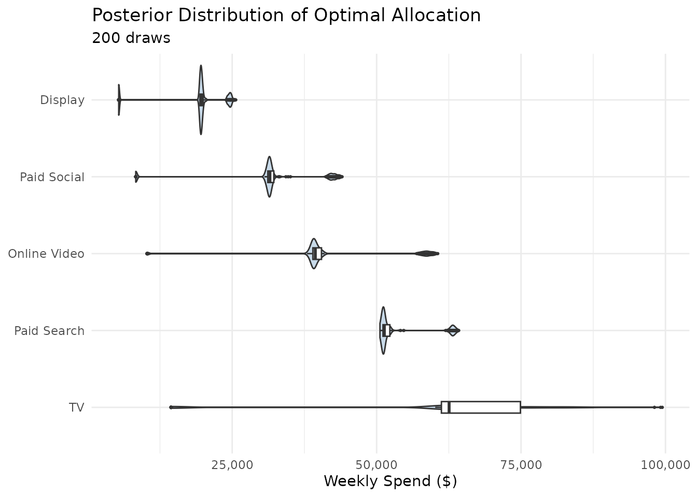
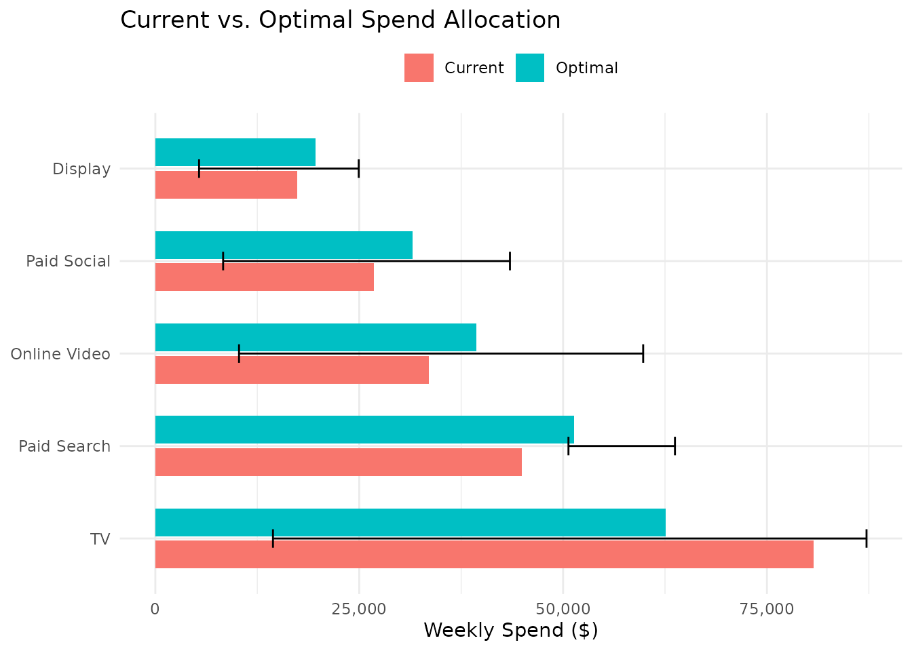
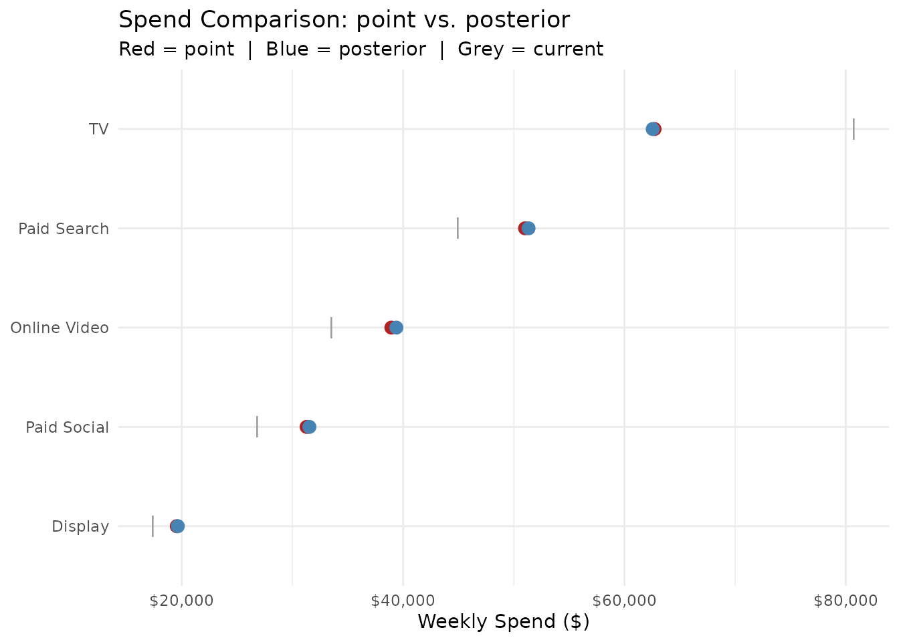
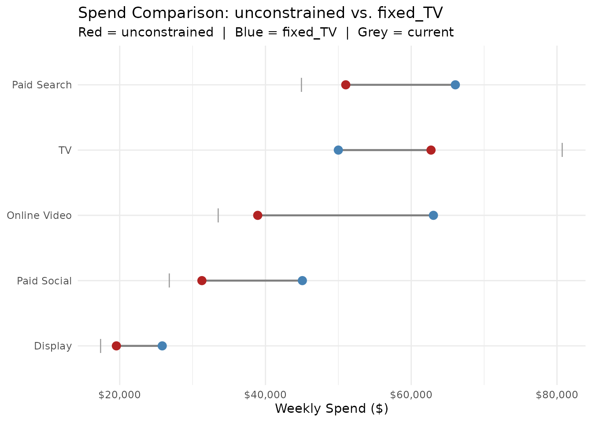

Media Mix Optimization
optimization.RmdOverview
Once you have fitted response curves for each media channel,
opt_mix() finds the budget allocation that maximises total
KPI. It supports two optimization methods:
-
Point estimate (
method = "point"): uses the posterior median parameters from each model. Fast — typically under one second. -
Posterior sampling
(
method = "posterior"): optimises over many posterior draws, producing a distribution of optimal allocations that reflects Bayesian uncertainty. Takes a few seconds.
This vignette walks through the full optimization workflow using the
mrmopt_data example dataset.
1. Fitting the Models
We start by fitting a response curve for each channel. In practice you would compare multiple curve types per channel and select the best fit (see the Model Comparison & Diagnostics vignette). Here we use Gompertz curves for simplicity.
data(mrmopt_data)
channels <- c("Paid Search", "Paid Social", "Display",
"Online Video", "TV")
models <- list()
for (ch in channels) {
d <- mrmopt_data |> filter(channel == ch)
# Use log_logistic for TV (log-scale channel), gompertz for the rest
curve_type <- if (ch == "TV") "log_logistic" else "gompertz"
models[[ch]] <- fit_response(
data = d, spend = "spend", kpi = "conversions", date = "week",
type = curve_type
)
}The result is a named list of mrmfit objects — the
required input for opt_mix().
2. Point Estimate Optimization
The simplest call uses the default budget (total current weekly spend across all channels) and point-estimate parameters:
opt_point <- opt_mix(models, method = "point")
#> No budget supplied; using total current weekly spend: 203,497
#>
#> Optimization setup:
#> Channels: 5
#> Method: point
#> Weekly budget: 203,497
#>
#> Optimization converged (status: 4 )
#> Total weekly KPI: 2,907Inspecting the Result
print() gives a formatted summary:
print(opt_point)
#> -- Optimization Result (point) -----------------------------------------------
#> Budget: $203,497/week | Channels: 5
#> -- Optimal Allocation --------------------------------------------------------
#> Channel Weekly Spend Weekly KPI CP Share
#> Paid Social $31,279 531 $59 15.4%
#> Paid Search $51,017 819 $62 25.1%
#> Online Video $38,937 614 $63 19.1%
#> Display $19,547 289 $68 9.6%
#> TV $62,718 654 $96 30.8%
#> -- Totals --------------------------------------------------------------------
#> Optimal: Spend $203,497 | KPI 2,907 | Avg CP $70
#> Current: Spend $203,461 | KPI 2,704 | Avg CP $75
#> Change: KPI +7.5% | CP $5summary() returns a tidy tibble comparing current
vs. optimal allocation with absolute and percentage deltas:
summary(opt_point) |>
select(channel, spend_delta_pct, kpi_delta_pct, cp_delta)
#> # A tibble: 6 × 4
#> channel spend_delta_pct kpi_delta_pct cp_delta
#> <chr> <dbl> <dbl> <dbl>
#> 1 Paid Social 0.166 0.401 -15.4
#> 2 Paid Search 0.135 0.408 -15.5
#> 3 Online Video 0.162 0.357 -13.7
#> 4 Display 0.122 0.362 -14.5
#> 5 TV -0.223 -0.393 14.5
#> 6 TOTAL 0.000179 0.0752 -5.25Visualising the Allocation
plot() supports several plot types. The default is
"allocation", which shows current vs. optimal spend as
grouped bars:
plot(opt_point, type = "allocation")
Current vs. optimal spend allocation.
The "comparison" type produces a dumbbell chart showing
the direction and magnitude of spend reallocation:
plot(opt_point, type = "comparison")
Spend reallocation from current to optimal.
3. Response Curves and Returns
To understand why the optimizer reallocates spend, overlay the current and optimal positions on each channel’s response curve:
plot(opt_point, type = "curves")
Response curves with current (red) and optimal (blue) spend positions.
The "returns" plot shows where the current and optimal
points sit on each channel’s average return (AR) and marginal return
(MR) curves — this is where you can see the efficiency trade-offs
driving the allocation:
plot(opt_point, type = "returns")
AR and MR curves at current and optimal spend.
4. Posterior Optimization
Point estimates ignore parameter uncertainty. Posterior optimization runs the solver across multiple MCMC draws, producing a distribution of solutions:
opt_post <- opt_mix(
models,
method = "posterior",
n_draws = 200,
seed = 5291
)
#> No budget supplied; using total current weekly spend: 203,497
#>
#> Optimization setup:
#> Channels: 5
#> Method: posterior
#> Weekly budget: 203,497
#>
#> Optimizing across 200 posterior draws...
#> | | | 0% | |= | 1% | |= | 2% | |== | 2% | |== | 3% | |== | 4% | |=== | 4% | |==== | 5% | |==== | 6% | |===== | 6% | |===== | 7% | |===== | 8% | |====== | 8% | |====== | 9% | |======= | 10% | |======== | 11% | |======== | 12% | |========= | 12% | |========= | 13% | |========= | 14% | |========== | 14% | |========== | 15% | |=========== | 16% | |============ | 16% | |============ | 17% | |============ | 18% | |============= | 18% | |============= | 19% | |============== | 20% | |=============== | 21% | |=============== | 22% | |================ | 22% | |================ | 23% | |================ | 24% | |================= | 24% | |================== | 25% | |================== | 26% | |=================== | 26% | |=================== | 27% | |=================== | 28% | |==================== | 28% | |==================== | 29% | |===================== | 30% | |====================== | 31% | |====================== | 32% | |======================= | 32% | |======================= | 33% | |======================= | 34% | |======================== | 34% | |======================== | 35% | |========================= | 36% | |========================== | 36% | |========================== | 37% | |========================== | 38% | |=========================== | 38% | |=========================== | 39% | |============================ | 40% | |============================= | 41% | |============================= | 42% | |============================== | 42% | |============================== | 43% | |============================== | 44% | |=============================== | 44% | |================================ | 45% | |================================ | 46% | |================================= | 46% | |================================= | 47% | |================================= | 48% | |================================== | 48% | |================================== | 49% | |=================================== | 50% | |==================================== | 51% | |==================================== | 52% | |===================================== | 52% | |===================================== | 53% | |===================================== | 54% | |====================================== | 54% | |====================================== | 55% | |======================================= | 56% | |======================================== | 56% | |======================================== | 57% | |======================================== | 58% | |========================================= | 58% | |========================================= | 59% | |========================================== | 60% | |=========================================== | 61% | |=========================================== | 62% | |============================================ | 62% | |============================================ | 63% | |============================================ | 64% | |============================================= | 64% | |============================================== | 65% | |============================================== | 66% | |=============================================== | 66% | |=============================================== | 67% | |=============================================== | 68% | |================================================ | 68% | |================================================ | 69% | |================================================= | 70% | |================================================== | 71% | |================================================== | 72% | |=================================================== | 72% | |=================================================== | 73% | |=================================================== | 74% | |==================================================== | 74% | |==================================================== | 75% | |===================================================== | 76% | |====================================================== | 76% | |====================================================== | 77% | |====================================================== | 78% | |======================================================= | 78% | |======================================================= | 79% | |======================================================== | 80% | |========================================================= | 81% | |========================================================= | 82% | |========================================================== | 82% | |========================================================== | 83% | |========================================================== | 84% | |=========================================================== | 84% | |============================================================ | 85% | |============================================================ | 86% | |============================================================= | 86% | |============================================================= | 87% | |============================================================= | 88% | |============================================================== | 88% | |============================================================== | 89% | |=============================================================== | 90% | |================================================================ | 91% | |================================================================ | 92% | |================================================================= | 92% | |================================================================= | 93% | |================================================================= | 94% | |================================================================== | 94% | |================================================================== | 95% | |=================================================================== | 96% | |==================================================================== | 96% | |==================================================================== | 97% | |==================================================================== | 98% | |===================================================================== | 98% | |===================================================================== | 99% | |======================================================================| 100%
#>
#> Posterior optimization complete.
#> Median total weekly KPI: 2,934
print(opt_post)
#> -- Optimization Result (posterior, 200 draws) --------------------------------
#> Budget: $203,497/week | Channels: 5
#> -- Optimal Allocation --------------------------------------------------------
#> Channel Weekly Spend [95% CI] CP Share
#> Paid Social $31,534 [$8,310 – $43,484] $59 +15.4%
#> Paid Search $51,334 [$50,659 – $63,719] $62 +25.1%
#> Online Video $39,389 [$10,262 – $59,822] $63 +19.3%
#> Display $19,643 [$5,361 – $24,940] $67 +9.6%
#> TV $62,549 [$14,425 – $87,211] $96 +30.6%
#> -- Totals --------------------------------------------------------------------
#> Optimal: Spend $204,449 | KPI 2,934 | Avg CP $70
#> Current: Spend $203,461 | KPI 2,704 | Avg CP $75
#> Change: KPI +8.5% | CP $6The "posterior" plot type shows the distribution of
optimal spend per channel as violin plots:
plot(opt_post, type = "posterior")
Posterior distribution of optimal allocations across 200 draws.
The "allocation" plot adds 95% credible interval error
bars when used with a posterior result:
plot(opt_post, type = "allocation")
Optimal allocation with 95% CIs from posterior optimization.
5. Comparing Methods
compare() produces a side-by-side diff of two
optimization results:
comp <- compare(opt_point, opt_post)
comp |> select(channel, spend_point, spend_posterior, spend_diff_pct, kpi_diff_pct)
#> # A tibble: 6 × 5
#> channel spend_point spend_posterior spend_diff_pct kpi_diff_pct
#> <chr> <dbl> <dbl> <dbl> <dbl>
#> 1 Paid Social 31279. 31534. 0.00814 0.0111
#> 2 Paid Search 51017. 51334. 0.00622 0.00953
#> 3 Online Video 38937. 39389. 0.0116 0.0175
#> 4 Display 19547. 19643. 0.00495 0.00917
#> 5 TV 62718. 62549. -0.00269 -0.000118
#> 6 TOTAL 203497. 204449. 0.00468 0.00928plot() on a compare result produces a dumbbell
chart:
plot(comp, type = "spend")
Point vs. posterior optimal spend per channel.
6. Period Budgets
Response curves model weekly spend-to-KPI
relationships, but planning often involves period budgets (quarterly,
annual). The budget and n_weeks arguments
translate a total period budget into weekly optimization:
opt_annual <- opt_mix(
models,
method = "point",
budget = 10000000,
n_weeks = 52
)
#>
#> Optimization setup:
#> Channels: 5
#> Method: point
#> Weekly budget: 192,308
#> Period budget: 1e+07 ( 52 weeks)
#>
#> Optimization converged (status: 5 )
#> Total weekly KPI: 2,799
#> Total period KPI: 145,562
print(opt_annual)
#> -- Optimization Result (point) -----------------------------------------------
#> Budget: $192,308/week | $10,000,000 over 52 weeks | Channels: 5
#> -- Optimal Allocation --------------------------------------------------------
#> Channel Weekly Spend Weekly KPI CP Share
#> Paid Social $39,897 632 $63 20.7%
#> Paid Search $60,312 927 $65 31.4%
#> Online Video $54,225 797 $68 28.2%
#> Display $23,449 334 $70 12.2%
#> TV $14,425 108 $133 7.5%
#> -- Totals --------------------------------------------------------------------
#> Optimal: Spend $192,308 | KPI 2,799 | Avg CP $69
#> Current: Spend $203,461 | KPI 2,704 | Avg CP $75
#> Change: KPI +3.5% | CP $7
#>
#> Period (52 weeks): $10,000,000 spend | 145,562 KPIThe solution reports both weekly and period-level totals. The underlying assumption is that the response curve is stationary across the period — if spend-response relationships vary seasonally, this is an approximation.
7. Constraints
Auto-Generated Constraints
By default, opt_mix() derives bounds from each model’s
return rate range and a bounds_multiplier (default 3). This
prevents the optimizer from extrapolating far beyond observed spend
levels.
User-Supplied Constraints
For more control, pass a data frame with per-channel bounds:
my_constraints <- tibble(
channel = names(models),
min_spend = c(10000, 5000, 3000, 8000, 20000),
max_spend = c(80000, 50000, 30000, 60000, 150000)
)
opt_constrained <- opt_mix(
models,
method = "point",
budget = 250000,
constraints = my_constraints
)
#>
#> Optimization setup:
#> Channels: 5
#> Method: point
#> Weekly budget: 250,000
#>
#> Optimization converged (status: 4 )
#> Total weekly KPI: 3,849
print(opt_constrained)
#> -- Optimization Result (point) -----------------------------------------------
#> Budget: $250,000/week | Channels: 5
#> -- Optimal Allocation --------------------------------------------------------
#> Channel Weekly Spend Weekly KPI CP Share
#> Paid Social $34,137 584 $58 13.7%
#> Paid Search $54,012 875 $62 21.6%
#> Online Video $44,211 714 $62 17.7%
#> Display $20,815 313 $67 8.3%
#> TV $96,825 1,363 $71 38.7%
#> -- Totals --------------------------------------------------------------------
#> Optimal: Spend $250,000 | KPI 3,849 | Avg CP $65
#> Current: Spend $203,461 | KPI 2,704 | Avg CP $75
#> Change: KPI +42.3% | CP $10Share-Based Constraints
You can also set constraints as a fraction of total budget. For example, ensuring TV gets at least 20% but no more than 40% of the budget:
share_constraints <- tibble(
channel = names(models),
min_spend = rep(0, 5),
max_spend = rep(200000, 5),
min_share = c(NA, NA, NA, NA, 0.20),
max_share = c(NA, NA, NA, NA, 0.40)
)
opt_share <- opt_mix(
models,
method = "point",
budget = 250000,
constraints = share_constraints
)
#>
#> Optimization setup:
#> Channels: 5
#> Method: point
#> Weekly budget: 250,000
#>
#> Optimization converged (status: 5 )
#> Total weekly KPI: 3,760
print(opt_share)
#> -- Optimization Result (point) -----------------------------------------------
#> Budget: $250,000/week | Channels: 5
#> -- Optimal Allocation --------------------------------------------------------
#> Channel Weekly Spend Weekly KPI CP Share
#> Display $0 18 $0 0.0%
#> Paid Social $38,737 626 $62 15.5%
#> Paid Search $59,031 921 $64 23.6%
#> Online Video $52,233 788 $66 20.9%
#> TV $100,000 1,406 $71 40.0%
#> -- Totals --------------------------------------------------------------------
#> Optimal: Spend $250,000 | KPI 3,760 | Avg CP $66
#> Current: Spend $203,461 | KPI 2,704 | Avg CP $75
#> Change: KPI +39% | CP $9When both absolute and share-based bounds are present, the tighter constraint wins.
Fixed Channels
To lock a channel at a specific spend level (e.g., a contractual
commitment), set fixed = TRUE:
fixed_constraints <- tibble(
channel = names(models),
min_spend = c(0, 0, 0, 0, 50000),
max_spend = c(200000, 200000, 200000, 200000, 200000),
fixed = c(FALSE, FALSE, FALSE, FALSE, TRUE)
)
opt_fixed <- opt_mix(
models,
method = "point",
budget = 250000,
constraints = fixed_constraints
)
#>
#> Optimization setup:
#> Channels: 5
#> Method: point
#> Weekly budget: 250,000
#>
#> Optimization converged (status: 4 )
#> Total weekly KPI: 3,124TV is locked at $50,000/week; the remaining $200,000 is optimized across the other four channels.
comp_fixed <- compare(opt_point, opt_fixed, labels = c("unconstrained", "fixed_TV"))
plot(comp_fixed, type = "spend")
Unconstrained vs. fixed-TV optimization.
Summary
| Function / Method | Purpose |
|---|---|
opt_mix(method = "point") |
Fast single-solution optimization |
opt_mix(method = "posterior") |
Bayesian optimization with uncertainty |
print() |
Formatted console summary |
summary() |
Tidy comparison tibble with deltas |
plot(type = "allocation") |
Grouped bar: current vs. optimal |
plot(type = "comparison") |
Dumbbell: current → optimal |
plot(type = "curves") |
Response curves with current + optimal points |
plot(type = "returns") |
AR/MR curves at current + optimal |
plot(type = "posterior") |
Violin of posterior allocations |
compare() |
Side-by-side diff of two results |
plot(compare_result) |
Dumbbell chart of two results |